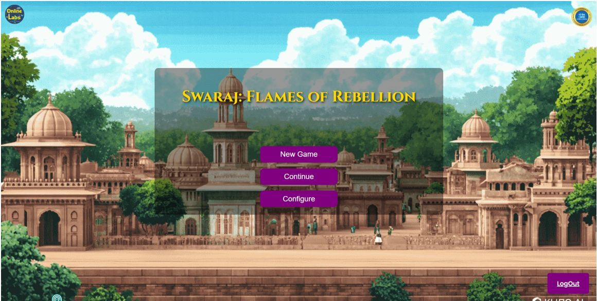
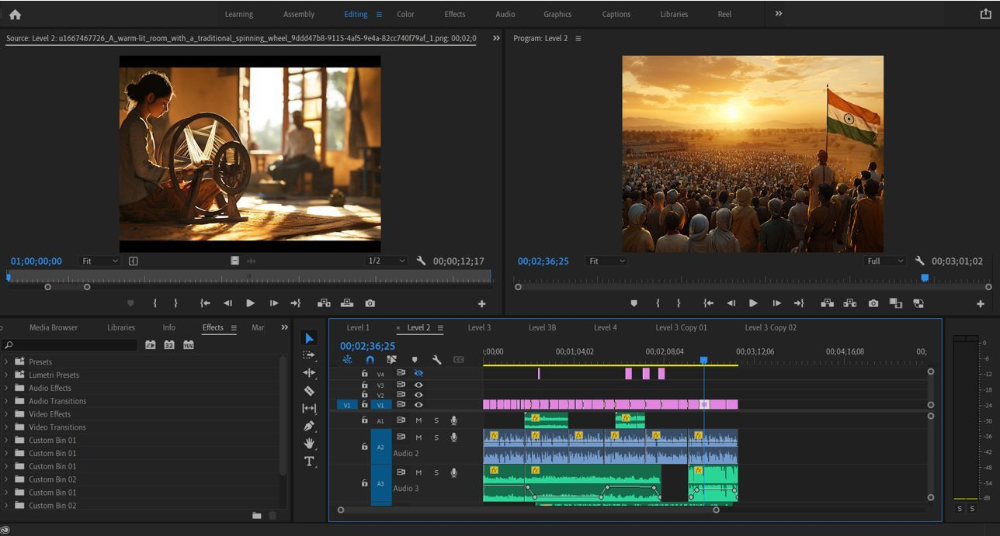
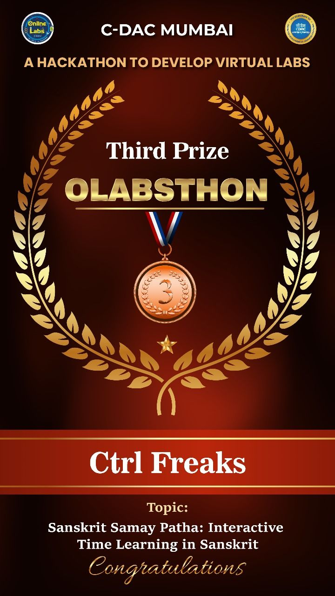

Interactive history-learning platform with games, quizzes, and videos — turning education into an adventure!
🏆 Hackathon 2nd Runner-up – CDAC OLEB2024
Learn Through Play is an innovative platform designed to make history engaging and fun for CBSE students. It combines interactive video lessons, gamified quizzes, and a competitive leaderboard to encourage learning through play.
The platform offers role-based access control — teachers can upload quizzes, games, and videos, while students can play, learn, and compete for top leaderboard spots. The project was built with Laravel, JavaScript, and gamification strategies to boost student participation and retention.
Create quizzes, upload videos, and manage game levels with ease.
Students earn points, unlock levels, and learn history through fun challenges.
Track top players and motivate students with friendly competition.



Developed as part of the CBSE Hackathon organized by CDAC, Learn Through Play stood out for its innovative use of gamification in education. The project won 2nd Runner-up position among several competing teams, showcasing creativity and technical execution.